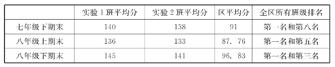
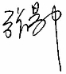

总 序
感谢湖北科学技术出版社督促我将这30多年里写的科普作品回顾整理一下。我想人的天性是懒的，就像物体有惰性。要是没什么鞭策，没什么督促，很多事情就做不成。我的第一本科普书《数学传奇》，就是在中国少年儿童出版社的文赞阳先生督促下写成的。那是1979年暑假，他到成都，到我家里找我。他说你还没有出过书，就写一本数学科普书吧。这么说了几次，盛情难却，我就试着写了，自己一读又不满意，就撕掉重新写。那时没有电脑或打字机，是老老实实用笔在稿纸上写的。几个月下来，最后写了6万字。他给我删掉了3万，书就出来了。为什么要删？文先生说，他看不懂的就删，连自己都看不懂，怎么忍心印出来给小朋友看呢？书出来之后，他高兴地告诉我，很受欢迎，并动员我再写一本。
后来，其他的书都是被逼出来的。湖南教育出版社的《数学与哲学》，是我大学里高等代数老师丁石孙先生主编的套书中的一本。开策划会时我没出席，他们就留了“数学与哲学”这个题目给我。我不懂哲学，只好找几本书老老实实地学了两个月，加上自己的看法，凑出来交卷。书中对一些古老的话题如“飞矢不动”“白马非马”“先有鸡还是先有蛋”“偶然与必然”，冒昧地提出自己的看法，引起了读者的兴趣。此书后来被3家出版社再版。又被选用改编为数学教育方向的《数学哲学》教材。其中许多材料还被收录于一些中学的校本教材之中。
《数学家的眼光》是被陈效师先生逼出来的。他说，您给文先生写了书，他退休了，我接替他的工作，您也得给我写。我经不住他一再劝说，就答应下来。一答应，就像是欠下一笔债似的，只好想到什么就写点什么。5年积累下来，写成了6万字的一本小册子。
这是外因，另外也有内因。自己小时候接触了科普书，感到帮助很大，印象很深。比如苏联伊林的《＋万个为什么》《几点钟》《不夜天》《汽车怎样会跑路》；我国顾均正的《科学趣味》和他翻译的《乌拉·波拉故事集》，刘薰宇的《马先生谈算学》和《数学的园地》，王峻岑的《数学列车》。这些书不仅读起来有趣，读后还能够带来悠长的回味和反复的思索。还有法布尔的《蜘蛛的故事》和《化学奇谈》，很有思想，有启发，本来看上去很普通的事情，竟有那么多意想不到的奥妙在里面。看了这些书，就促使自己去学习更多的科学知识，也激发了创作的欲望。那时我就想，如果有人给我出版，我也要写这样好看的书。
法布尔写的书，以＋大卷的《昆虫记》为代表，不但是科普书，也可以看成是科学专著。这样的书，小朋友看起来趣味盎然，专家看了也收获颇丰。他的科学研究和科普创作是融为一体的，令人佩服。
写数学科普，想学法布尔太难了。也许根本不可能做到像《昆虫记》那样将科研和科普融为一体。但在写的过程中，总还是禁不住想把自己想出来的东西放到书里，把科研和科普结合起来。
从一开始，写《数学传奇》时，我就努力尝试让读者分享自己体验过的思考的乐趣。书里提到的“五猴分桃”问题，在世界上流传已久。20世纪80年代，诺贝尔奖获得者李政道访问中国科学技术大学，和少年班的学生们座谈时提到这个问题，少年大学生们一时都没有做出来。李政道介绍了著名数学家怀德海的一个巧妙解答，用到了高阶差分方程特解的概念。基于函数相似变换的思想，我设计了“先借后还”的情景，给出一个小学生能够懂的简单解法。这个小小的成功给了我很大的启发：写科普不仅仅是搬运和解读知识，也要深深地思考。
在《数学家的眼光》书中，提到了祖冲之的密率355/113有什么好处的问题。数学大师华罗庚在《数论导引》书中用丢番图理论证明了，所有分母不超过366的分数中，355/113最接近圆周率π。另一位数学家夏道行，在他的《e和π》书中用连分数理论推出，分母不超过8000的分数中，355/113最接近圆周率π。在学习了这些方法的基础上我做了进一步探索，只用初中数学中的不等式知识，不多几行的推导就能证明，分母不超过16586的分数中，355/113是最接近π的冠军。而52163/16604比355/113在小数后第七位上略精确一点，但分母却大了上百倍！
我的北京大学老师程庆民教授在一篇书评中，特别称赞了五猴分桃的新解法。著名数学家王元院士，则在书评中对我在密率问题的处理表示欣赏。学术前辈的鼓励，是对自己的鞭策，也是自己能够长期坚持科普创作的动力之一。
在科普创作时做过的数学题中，我认为最有趣的是生锈圆规作图问题。这个问题是美国著名几何学家佩多教授在国外刊物上提出来的，我们给圆满地解决了。先在国内作为科普文章发表，后来写成英文刊登在国外的学术期刊《几何学报》上。这是数学科普与科研相融合的不多的例子之一。佩多教授就此事发表过一篇短文，盛赞中国几何学者的工作，说这是他最愉快的数学经验之一。
1974年我在新疆当过中学数学教师。一些教学心得成为后来科普写作的素材。文集中多处涉及面积方法解题，如《从数学教育到教育数学》《新概念几何》《几何的新方法和新体系》等，系源于教学经验的启发。面积方法古今中外早已有了。我所做的，主要是提出两个基本工具（共边定理和共角定理），并发现了面积方法是具有普遍意义的几何解题方法。1992年应周咸青邀请访美合作时，从共边定理的一则应用中提炼出消点算法，发展出几何定理机器证明的新思路。接着和周咸青、高小山合作，系统地建立了几何定理可读证明自动生成的理论和算法。杨路进一步把这个方法推广到非欧几何，并发现了一批非欧几何新定理。国际著名计算机科学家保伊尔（RobertS.Boyer）将此誉为计算机处理几何问题发展道路上的里程碑。这一工作获1995年中国科学院自然科学一等奖和1997年国家自然科学二等奖。从教学到科普又到科学研究，20年的发展变化实在出乎自己的意料！
在《数学家的眼光》中，用一个例子说明，用有误差的计算可能获得准确的结果。基于这一想法，最近几年开辟了“零误差计算”的新的研究方向，初步有了不错的结果。例如，用这个思想建立的因式分解新算法，对于两个变元的情形，比现有方法效率有上千倍的提高。这个方向的研究还在发展之中。
1979—1985年，我在中国科学技术大学先后为少年班和数学系讲微积分。在教学中对极限概念和实数理论做了较深入的思考，提出了一种比较容易理解的极限定义方法——“非ε语言极限定义”，还发现了类似于数学归纳法的“连续归纳法”。这些想法，连同面积方法的部分例子，构成了1989年出版的《从数学教育到教育数学》的主要内容。这本书是在四川教育出版社余秉本女士督促下写出来的。书中第一次提出了“教育数学”的概念，认为教育数学的任务是“为了数学教育的需要，对数学的成果进行再创造。”这一理念渐渐被更多的学者和老师们认同，导致2004年教育数学学会（全名是“中国高等教育学会教育数学专业委员会”）的诞生。此后每年举行一次教育数学年会，交流切磋为教育而改进数学的心得。这本书先后由三家出版社发行，从此面积方法在国内被编入多种奥数培训读物。师范院校的教材《初等几何研究》（左铨如、季素月编著，上海科技教育出版社1991年出版）中详细介绍了系统面积方法的基本原理。已故的著名数学家和数学教育家，西南师大陈重穆教授在主持编写的《高效初中数学实验教材》中，把面积方法的两个基本工具“共边定理”和“共角定理”作为重要定理，教学实验效果很好。1993年，四川都江教育学院刘宗贵老师根据此书中的想法编写的教材《非ε语言一元微积分学》在贵州教育出版社出版。在教学实践中效果明显，后来还发表了论文。此后，重庆师范学院陈文立先生和广州师范学院萧治经先生所编写的微积分教材，也都采用了此书中提出的“非ε语言极限定义”。
10多年之后，受林群先生研究工作的启发带动，我重启了关于微积分教学改革的思考。文集中有关不用极限的微积分的内容，是2005年以来的心得。这方面的见解，得到著名数学教育家张奠宙先生的首肯，使我坚定了投入教学实践的信心。我曾经在高中尝试过用5个课时讲不用极限的微积分初步。又在南方科技大学试讲，用16个课时不用极限讲一元微积分，严谨论证了所有的基本定理。初步实验的，效果尚可，系统的教学实践尚待开展。
也是在2005年后，自己对教育数学的具体努力方向有了新的认识。长期以来，几何教学是国际上数学教育关注的焦点之一，我也因此致力于研究更为简便有力的几何解题方法。后来看到大家都在删减传统的初等几何内容，促使我作战略调整的思考，把关注的重点从几何转向三角。2006年发表了有关重建三角的两篇文章，得到张奠宙先生热情的鼓励支持。这方面的想法，就是《一线串通的初等数学》一书的主要内容。书里面提出，初中一年级就可以学习正弦，然后以三角带动几何，串联代数，用知识的纵横联系驱动学生的思考，促进其学习兴趣与数学素质的提高。初一学三角的方案可行吗？宁波教育学院崔雪芳教授先吃螃蟹，做了一节课的反复试验。她得出的结论是可行！但是，学习内容和国家教材不一致，统考能过关吗？做这样的教学实验有一定风险，需要极大的勇气，也要有行政方面的保护支持。2012年，在广州市科协开展的“千师万苗工程”支持下，经广州海珠区教育局立项，海珠实验中学组织了两个班的初中全程的实验。两个实验班有105名学生，入学分班平均成绩为62分和64分，测试中有三分之二的学生不会作三角形的钝角边上的高，可见数学基础属于一般水平。实验班由一位青年教师张东方负责备课讲课。她把《一线串通的初等数学》的内容分成5章92课时，整合到人教版初中数学教材之中。整合的结果节省了60个课时，5个学期内不仅讲完了按课程标准6个学期应学的内容，还用书中的新方法从一年级下学期讲正弦和正弦定理，以后陆续讲了正弦和角公式，余弦定理这些按常规属于高中课程的内容。教师教得顺利轻松，学生学得积极愉快。其间经历了区里的3次期末统考，张东方老师汇报的情况如下：
从成绩看效果
期间经过三次全区期末统考。实验班学生做题如果用了教材以外的知识，必须对所用的公式给出推导过程。在全区80个班级中，实验班的成绩突出，比区平均分高很多。满分为150分，实验一班有4位同获满分，其中最差的个人成绩120多分。

这样的实验效果是出乎我意料的。目前，广州市教育研究院正在总结研究经验，并组织更多的学校准备进行更大规模的教学实验。
科普作品，以“普”为贵。科普作品中的内容若能进入基础教育阶段的教材，被社会认可为青少年普遍要学的知识，就普得不能再普了。当然，一旦成为教材，科普书也就失去了自己作为科普的意义，只是作为历史记录而存在。这是作者的希望，也是多年努力的目标。
文集编辑工作即将完成之际，湖北科学技术出版社刘虹老师建议我写个总序。我从记忆中检索出一些与文集中某些内容有关的往事杂感，勉强塞责。书中不当之处，欢迎读者指正。
湖北科学技术出版社何龙社长热心鼓励我出版文集；还有华中师范大学国家数字化学习工程中心彭翕成老师（《绕来绕去的向量法》作者之一，该书中绝大多数例题和题解由他提供）为文集的出版付出了辛勤劳动，在此谨表示衷心的感谢。

2014年10月14日